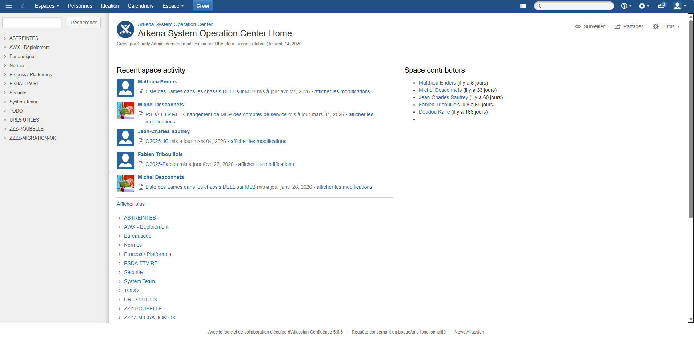
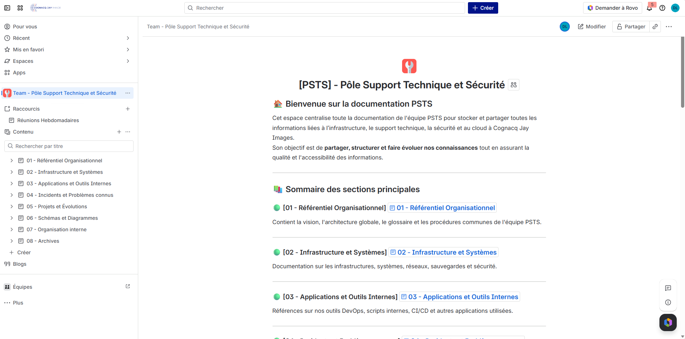

Migration d’une partie de la documentation Confluence
Contexte
Dans le cadre de mon alternance chez Cognacq-Jay Image, l’entreprise a effectué une migration de son ancien Confluence hébergé en interne vers une nouvelle version cloud.
Cette migration nécessitait une réorganisation complète de la documentation afin d’améliorer sa lisibilité, son accessibilité et sa structure globale.
Objectifs
- Participer à la migration de la documentation
- Réorganiser les espaces documentaires
- Créer une structure plus claire et moderne
- Faciliter l’accès aux informations techniques
- Former les collaborateurs au nouveau Confluence
- Standardiser les templates documentaires
Environnement technique
Travaux réalisés
Réorganisation documentaire
Participation à la restructuration des espaces Confluence afin de rendre la documentation plus claire, plus accessible et plus simple à maintenir.
Migration des contenus
Migration de plusieurs pages et contenus techniques vers la nouvelle plateforme cloud, avec vérification de la cohérence des informations.
Création de templates
Mise en place de modèles de fiches documentaires afin d’uniformiser la présentation des procédures et des informations techniques.
Formation des collaborateurs
Accompagnement d’une partie de l’équipe dans la prise en main du nouveau Confluence et dans l’utilisation des nouveaux espaces documentaires.
Ancien Confluence
Ancienne version de Confluence hébergée en interne, utilisée avant la migration vers la version cloud.

Nouveau Confluence Cloud
Nouvelle organisation documentaire mise en place après la migration vers Confluence Cloud.

Résultats obtenus
Impact utilisateur
- Documentation plus claire et structurée
- Navigation simplifiée dans les espaces
- Meilleure accessibilité des procédures
- Prise en main facilitée pour les équipes
Impact entreprise
Cette migration a permis d’améliorer la centralisation des connaissances, la qualité de la documentation et l’organisation des ressources techniques.
Compétences mobilisées
- Gestion documentaire
- Migration de contenus
- Support utilisateur
- Formation et accompagnement
- Organisation des ressources numériques
- Utilisation de Confluence Cloud
Documentation associée
Bilan personnel
Cette mission m’a permis de participer à un projet de migration documentaire concret, d’améliorer mes capacités d’organisation et de développer mes compétences dans l’accompagnement des utilisateurs.